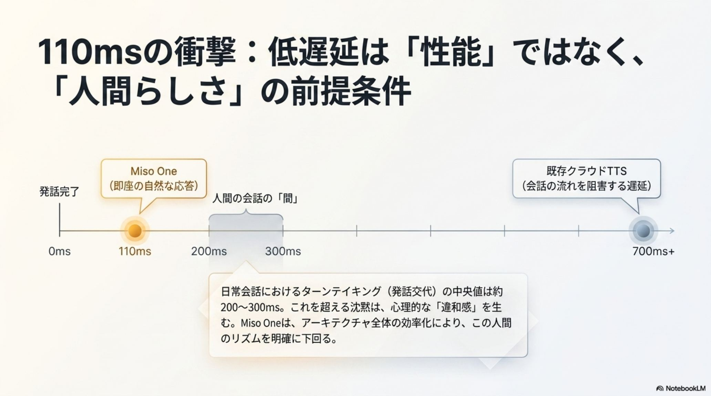
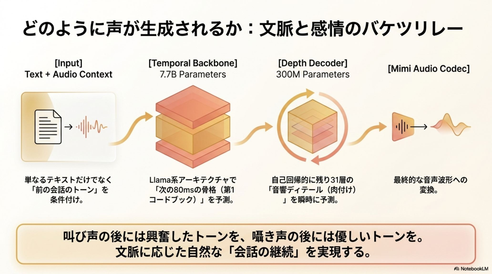
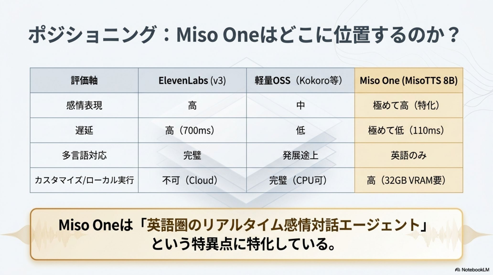

「声」に、
命が宿る。
2026年6月、Miso Labs が公開した Miso One（MisoTTS 8B）。世界で最も「感情的」を標榜する、オープンウェイトの音声生成モデル。息遣い・ためらい・笑い——言語化できない機微を、声そのものに宿す。

「何を言うか」から、
「どう話すか」へ。
LLMの知能は完璧に近づいた。しかし、声にはまだ体温が宿っていなかった。 Miso One の本質は、文章を読み上げる従来のTTSではなく、会話の文脈とトーンを直接モデリングする「音声言語モデル」である。AIの主戦場は、論理の層から身体性の層へ移る。
「正しく答える」道具
知能は完璧。しかし声は機械的で、正しい回答をしていてもユーザーは離脱する。会話の「間」も「体温」もない、不自然な相手だった。
「共に話す」パートナー
抑揚・息遣い・微細な感情の機微を再現。相手の叫びに優しく返し、囁きに合わせて応じる。声の情報量そのものが価値になる。
110msは性能ではなく、
「人間らしさ」の前提条件。
人間同士の会話のターン交代は平均 200〜300ms。Miso One の 110ms は、人間の反応速度（160ms）すら上回る。これは単なる処理の速さではない——会話における「迷い」や「拒否」と誤解される「気まずい沈黙」を消し去り、信頼を築くための前提条件だ。
天文学的な、感情の表現空間。
従来のTTSは固定された語彙に縛られていた。Miso One は RVQ（残差ベクトル量子化） で音声を階層的に量子化し、32個のコードブック × 各2048語彙を組み合わせる。理論上の表現空間は、宇宙の原子数をも超える。
ピッチ・リズム・ためらい・笑い・息を、直接モデル化する。
文脈と感情の、
バケツリレー。
MisoTTS 8B は、Llama 3.2 系をベースにした二段構成のTransformer。骨格を描くバックボーンと、質感を彫るデコーダが連携し、声の細部までを自己回帰的に生成する。
Text ＋ Audio Context
テキストに加え、前の発話のトーンを条件付け。文脈に沿った声を生む。
Temporal Backbone
テキストと過去の音声履歴を処理し、次フレームの「粗い音響」を予測する。
Depth Decoder
骨格を基に、声の震え・息・音色といった詳細を自己回帰生成する。
声の情報量が、価値になる領域。
声の体温そのものが意味を持つあらゆる場所で、Miso One はパラダイムシフトを起こす。
カスタマーサポート
課題：正しい回答でも、声が機械的でユーザーが離脱する。
解決：謝罪の申し訳なさ、営業の熱意——状況に応じた「声の温度感」で顧客満足度を高める。
AIコンパニオン
課題：文章は自然でも、声に感情が伴わない。
解決：恋愛モノローグ・興奮した実況・セラピー調の囁き——用途ごとにレジスターを演じ分け、没入感を提供する。
ボイスクローン
課題：感情の異なるテイクを録る再収録コスト。
解決：10秒のサンプルからワンショット・クローン。一貫した声質のまま、多様な感情を低コストで量産する。
医療・アクセシビリティ
課題：ALS患者などが声を失う時、自分らしさを伝えられない。
解決：自分の声のクローンで感情豊かに話す——尊厳の回復としての音声AI。
音声データの「主権」を、
取り戻す。
Miso Labs は最先端モデルをオープンウェイトで公開し、クローズドAPIへの依存に挑む。音声を外部APIへ送らずに済むことは、機密領域におけるデータ主権そのものだ。
ローカル導入という選択肢。 金融・医療・法務など機密性の高い領域でも、音声データを手元に留めたまま自社運用（セルフホスト）できる。商用クローズドAPIに対する、強力な代替選択肢となる。
悪用への備え。 生成音声にはデフォルトで電子透かし SilentCipher（Sony） が埋め込まれ、追跡可能性を担保。なりすまし・詐欺・有害コンテンツへの利用は厳格に禁止される。
動かすために。 ローカル実行には 32GB VRAM クラスのGPUが推奨される。8B規模ゆえ、日本語ファインチューニングの土台としても現実的だ。
- ◆自由な改変・配布・販売が基本。オープンウェイトでセルフホスト可能。
- ◆商用で MAU 5,000万超 または 月商 $10M 超の場合、UIに「Miso Labs」クレジット表示の義務。
- ◆SilentCipher 電子透かし（Sony）をデフォルト埋め込み。悪用を追跡。
- ◆なりすまし・詐欺・欺瞞・有害利用は厳格に禁止。
そして、まだ語られない制約。
強力な生成力には、正直な限界も伴う。現時点での制約を理解した上での導入が、賢明な一歩になる。
英語のみ対応
日本語特有の韻律や敬語表現への適応は今後の課題。8Bオープンモデルゆえ、日本語FTの余地は大きい。
Half-Duplex 限定
現状は「交互会話」のみ。割り込みや同時発話（full-duplex）にはまだ対応していない。
短文ハルシネーション
短いテキストで、内容と合致しない音声を生成するリスクが報告されている。
「情報の正確性」から、Miso One · MisoTTS 8B — 2026·06·05
「身体性の共有」へ。
技術ブリーフィング、抜粋。
本スライドの元となった技術解説資料より。レイテンシ、生成パイプライン、ポジショニングの要点。



出典と関連リファレンス。
本スライドは Miso One（MisoTTS 8B）の発表に基づく技術解説。確定情報はモデルカード・公式リポジトリでの裏取りを推奨する。